El agente ciego
Un juego viejo, un reto clásico de la IA
El juego del que partimos es un descendiente de Breakout, el arcade de romper ladrillos que Atari lanzó en 1976; su evolución más conocida —con pala móvil y niveles de formas variadas— es el Arkanoid de Taito (1986). No es una elección casual: tumbar ladrillos es uno de los bancos de prueba históricos del aprendizaje por refuerzo. En 2015, DeepMind enseñó a una sola red —su célebre DQN— a jugar a 49 juegos de Atari, Breakout entre ellos, mirando directamente los píxeles de la pantalla, y superó al humano en muchos de ellos (Human-level control through deep reinforcement learning, Nature, 2015). El precio fue colosal: del orden de 50 millones de fotogramas por juego —unos 38 días de partidas continuas— procesando cada imagen con una red convolucional.
Nuestra primera modelización: minimalista… y ciega
Partimos del mismo juego, pero con una decisión distinta en la forma de mirar. En lugar de darle al agente la pantalla en bruto (como hizo DeepMind), modelamos el mundo a mano. Y en el primer intento esa descripción fue, a propósito, mínima: definimos solo los parámetros cinemáticos de lo que se mueve —posición y velocidad de la bola, posición de la pala—, al estilo de cómo se describirían los objetos «originales» de un Pong o un Breakout clásico. Para acotar cada partida, además, limitamos el episodio a 600 ciclos de reloj (un tope de pasos).
El problema es que esa visión del mundo era incompleta. El agente sabía dónde estaban la bola y la pala, pero no veía los ladrillos: percibía «desde dónde lanza», no «hacia dónde apuntar». A diferencia de DeepMind —que tenía la imagen entera, con todos los ladrillos a la vista—, el nuestro no podía alimentarse de esa información porque sencillamente no estaba en su observación. Tras completar todos los ciclos de entrenamiento, el sistema no resolvía el juego: aprendía a sobrevivir, pero no a limpiar los niveles. Ese fracaso —y, sobre todo, su diagnóstico— es lo que cuenta este capítulo.
El primer agente solo veía seis números: posición y velocidad de la bola, y posición de la pala. En particular, no veía los ladrillos. Con eso puede aprender a devolver la bola… pero no sabe hacia dónde conviene dirigirla, porque no sabe dónde quedan ladrillos por romper.
* Ese 56% es la trampa, no un logro: en una rejilla llena, una bola que rebota ~2.200 pasos acaba tocando casi todo por física. Es supervivencia degenerada, no inteligencia. En cuanto los ladrillos están dispersos, hay que apuntar — y ahí el ciego se queda en 0%.
Tres muros, ninguno el algoritmo
Muro 1 · El reloj: ganar era imposible
Cada partida (un episodio) tenía un límite de pasos. El problema: limpiar todos los ladrillos exige muchos pasos, y el límite estaba demasiado corto. Ganar no era difícil: era imposible, porque no daba tiempo material.
Muro 2 · La recompensa: premiábamos lo que no queríamos
Para «ayudar» dábamos una recompensa extra, Φ (shaping), por acercar la pala a la bola. La intención era buena; el efecto, un sabotaje: arreaba al agente a un rebote casi vertical y a una estrategia degenerada (limpiar como mucho una columna). Optimizaba el premio… alejándose del objetivo.
Muro 3 · La observación: ciego a los ladrillos (el techo real)
Arreglado el reloj, el ciego seguía sin apuntar: ganaba por supervivencia en niveles llenos (≈56%) pero 0% en dispersos. Este es el muro de verdad: sin ver los ladrillos no se puede apuntar ni generalizar. Ninguna cantidad de entrenamiento arregla una observación incompleta.
Un reloj justo, una meta limpia y ojos
La solución no fue un algoritmo nuevo, sino replantear la tarea. Cinco cambios, cada uno atacando una causa concreta:
Dos formas de darle «ojos»: píxeles o una matriz
Para que el agente viera los ladrillos teníamos dos caminos. Opción A — la pantalla entera: darle la imagen en bruto, como hizo DeepMind, y que una red convolucional aprenda a interpretarla píxel a píxel. Es lo más general, pero también lo más caro (millones de fotogramas, días de cómputo, y ruido visual que no aporta nada al problema). Opción B — un resumen estructurado del mundo: en lugar de píxeles, darle una matriz de ocupación 8×10 que indica, celda a celda, si queda ladrillo o no (1/0), junto a los seis números cinemáticos de antes. Elegimos la opción B: captura lo esencial para apuntar —dónde quedan ladrillos y qué forma tienen— sin el coste de procesar una imagen.
Es una distinción honesta: no le damos la imagen del juego ni las reglas, sino una representación estructurada y ligera. Pero esa matriz, por sí sola, es una lista de ceros y unos. Para que el agente aproveche su estructura espacial —que dos ladrillos vecinos están relacionados, que una fila es una fila— hace falta una pieza más: la red deja de ser un simple perceptrón y gana una rama convolucional.
Un generador de niveles: aprender a generalizar, no a memorizar
Si entrenáramos siempre con el mismo tablero, el agente podría memorizarlo y no aprendería nada transferible. Para evitarlo construimos un generador de niveles: produce cientos de pantallas con familias de patrones (dispersión, filas, columnas, bloques, simétricos) y las reparte en conjuntos disjuntos de entrenamiento, validación y test. El agente entrena con unos, se vigila en validación durante el entrenamiento y se examina al final en pantallas que nunca vio (test). Empieza por las fáciles y desbloquea las difíciles al mejorar — un currículo. Así no memoriza un nivel concreto: aprende una política general que transfiere a niveles nuevos.
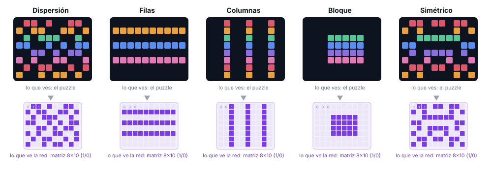
Ahora limpian niveles que nunca vieron
Los cinco métodos que vas a comparar
Antes de los números, una presentación rápida: ponemos a competir cinco algoritmos sobre exactamente el mismo problema, cada uno con una filosofía distinta de aprender.
No te preocupes si ahora suenan abstractos: más adelante dedicamos una sección a fondo a cada uno. Aquí basta con saber que son cinco maneras distintas de resolver lo mismo, para leer la comparativa con contexto.
Qué conseguimos y qué significa. Con la tarea bien planteada y el protocolo congelado, varios agentes pasan de no limpiar nada a resolver la mayoría de niveles no vistos. Esta imagen lo resume:

Cómo aprenden: curvas con banda multi-semilla
No reportamos «el mejor intento»: reportamos la distribución sobre 5 semillas. La línea es la media; la banda, el rango. Banda ancha = resultado frágil (depende de la suerte de la semilla).

La prueba de que apunta: mapas de calor
Si el agente apunta, los impactos se concentran donde hay ladrillos, siguiendo el patrón del nivel.


Tabla comparativa final (T1)
Una fila por modelo y por variante honesta (SAC-pure y SAC-critic-hybrid separados). TEST, a lo seguro, media de 5 semillas, 1,5 M. En verde, la mejor de cada columna.
| Modelo / variante | TEST-ID | OOD-patrón | OOD-dific. | 60–80 ladr. | Colapsos | %sem>80 | Pasos/limpiar | Comentario |
|---|---|---|---|---|---|---|---|---|
| PPO | 91% | 89% | 86% | 85% | 0% | 100% | 1923 | El mejor y el más fiable. |
| SAC-pure (actor) | 87% | 84% | 68% | 62% | 0% | 80% | 2732 | El actor SÍ funciona. |
| DQN | 77% | 74% | 64% | 65% | 0% | 80% | 2125 | Necesita presupuesto; estable. |
| SAC-critic-hybrid | 61% | 60% | 51% | 54% | 20% | 40% | 1716 | Bimodal: a veces colapsa. |
| WM (Dyna-Q cinemático) | 55% | 53% | 42% | 44% | 0% | 0% | 1977 | Techo ~55%. |
| WM-RNN (Dyna-Q cinemático) | 35% | 29% | 27% | 22% | 0% | 0% | 1370 | No-monótono; LSTM no ayuda. |
«Colapsos» = % de semillas por debajo del 10%. «%sem>80» = % de semillas que superan el 80%. Todo desde results/ledger.csv (160 runs reales).
El presupuesto importa (y revela quién es frágil)
| Modelo | 700k | 1,5M | 3M | Lectura |
|---|---|---|---|---|
| PPO | 90% | 91% | 87% | Aprende ya a 700k; meseta. El más sample-efficient. |
| SAC-pure | 25% | 87% | 91% | Despega entre 700k y 1,5M; arriba a 3M. |
| SAC-hybrid | 4% | 61% | 88% | Dependencia brutal del presupuesto. |
| DQN | 67% | 77% | 85% | Mejora monótona; se estabiliza. |
| WM (Dyna-Q) | 33% | 55% | 56% | Techo ~55%. |
| WM-RNN | 54% | 35% | 40% | No-monótono (ruido de semilla + alta varianza). |
No solo niveles fáciles (F4)

Qué ingrediente desbloqueó el aprendizaje (T2 · ablación)
Partimos de la receta completa (DQN, 77%) y quitamos un ingrediente cada vez. La caída mide su importancia. Dos sorpresas honestas.
| Ingrediente que quitamos | Éxito | Δ vs receta | Colapsos | Lectura |
|---|---|---|---|---|
| — (receta completa) | 77% | — | 0% | Referencia. |
| Escala 1.0 → 0.25 (de los ladrillos) | 1% | −76,5 | 100% | El ingrediente crítico. Atenuar la señal la mata. |
| Timeout constante → proporcional | 54% | −23,5 | 0% | El reloj importa, también en sentido inverso. |
| Conv → lista plana (MLP) | 57% | −20,4 | 0% | El sesgo espacial vale ~20 puntos. |
| ε-decay rápido → lento | 75% | −2,6 | 0% | Poco efecto a este presupuesto. |
| Sin currículo | 75% | −1,9 | 0% | Casi neutro a 1,5M (ayuda más a bajo presupuesto). |
| Sin shaping (Φ) | 85% | +8,0 | 0% | ¡Quitarlo MEJORA! Confirma que Φ era el saboteador. |
El vocabulario esencial
El bucle principal: agente ↔ entorno
El RL modela una conversación que se repite millones de veces entre dos partes. En cada paso de tiempo t: el agente observa el estado sₜ, elige una acción aₜ; el entorno aplica esa acción, evoluciona y devuelve la recompensa rₜ y el siguiente estado sₜ₊₁. El agente usa esa información para mejorar y vuelta a empezar. El objetivo del agente es maximizar la recompensa acumulada a largo plazo, no solo la inmediata.
Los componentes de un sistema de RL
Lo que el agente percibe: 6 cinemáticos (posición y velocidad de la pelota, posición de la pala, distancia pelota–pala) más la matriz de ocupación 8×10 de los 80 ladrillos. La parte de ladrillos es lo que le permite apuntar; un encoder convolucional la procesa.
Lo que el agente puede hacer. Aquí, 3 acciones discretas: mover la pala a la izquierda, mantenerla o moverla a la derecha.
La señal numérica que premia o castiga cada paso. Define qué significa "jugar bien". El agente no busca otra cosa que acumular recompensa.
La estrategia del agente: una función que, dado un estado, decide la acción (o una probabilidad por acción). Es lo que de verdad queremos aprender.
Cuánta recompensa futura cabe esperar. V(s) mide lo bueno que es un estado; Q(s,a), lo bueno que es tomar una acción en un estado. Guían a la política.
Una partida completa. Termina de tres formas: perder la pelota, limpiar el nivel, o agotar el límite de pasos (600 = “tiempo agotado”, sin castigo). El agente aprende de muchos episodios; medimos la recompensa media de los últimos 100.
El dilema central: ¿pruebo algo nuevo (explorar) por si es mejor, o aprovecho lo que ya sé que funciona (explotar)? Demasiada explotación estanca; demasiada exploración no avanza.
Un almacén de experiencias pasadas (s,a,r,s') del que se muestrean lotes para entrenar. Rompe la correlación temporal y reutiliza cada dato. Propio de métodos off-policy.
Una predicción de cómo responde el entorno: dado (s,a), ¿cuál es s' y r? La mayoría de métodos no lo usan (model-free); el World Model sí (model-based).
¿Aprender solo de lo último, o también de lo viejo?
Hay dos «escuelas», y se entienden pensando en cómo estudiarías para un examen. Forma A: repasas solo lo de hoy y por la noche tiras los apuntes; mañana, apuntes nuevos. Forma B: guardas todos los apuntes viejos en una carpeta y repasas un poco de todo, también lo de hace semanas.
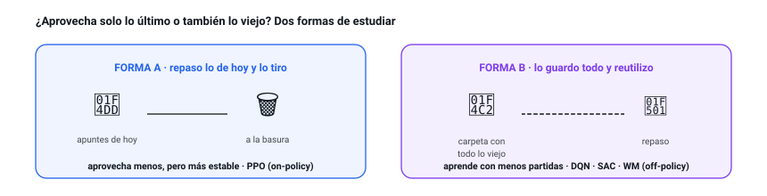
El agente aprende igual. En la Forma A solo aprende de su última tanda de partidas y la olvida enseguida: aprovecha menos cada partida, pero es más estable (así es PPO). En la Forma B guarda partidas viejas en una memoria y las reutiliza muchas veces: aprende con menos partidas, pero a veces se vuelve más inestable (así son DQN, SAC y World Model).
Recompensa, retorno y descuento
Cuidado con una confusión habitual: el agente no maximiza la recompensa de un paso, sino el retorno (G): la suma de todas las recompensas futuras. Pero el futuro lejano es incierto, así que se descuenta con un factor γ (gamma) entre 0 y 1: cada paso que se aleja en el tiempo cuenta un poco menos.
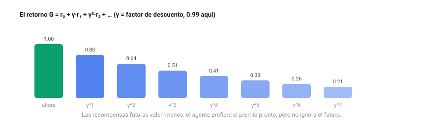
- Imagina que en los próximos 3 pasos ganas r = 1, 0, 1 y que γ = 0.9.
- El retorno es G = 1 + 0.9·0 + 0.9²·1 = 1 + 0 + 0.81 = 1.81.
- Fíjate: ese último «+1», por estar dos pasos en el futuro, solo cuenta como 0.81. Cuanto más lejos, menos pesa. Con γ=0.99 (lo que usamos) pesaría casi igual: el agente es muy previsor.
Probar cosas nuevas o ir a lo seguro
El agente tiene un dilema constante: ¿prueba un movimiento nuevo (por si es mejor) o repite lo que ya sabe que funciona? La forma más simple de decidirlo es echarlo a suertes. Imagina que, antes de cada movimiento, tira un dado: si sale un número bajo, prueba una acción al azar; si no, hace lo que ya conoce.
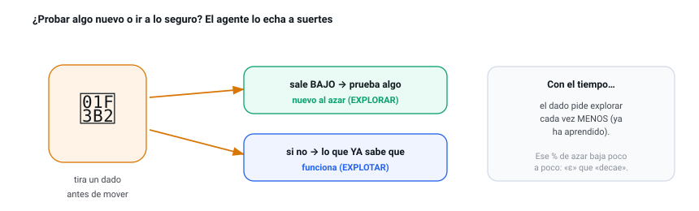
Al principio le interesa probar mucho (todavía no sabe nada), así que el dado manda explorar muy a menudo. Según aprende, prueba cada vez menos: ese porcentaje de azar va bajando poco a poco.
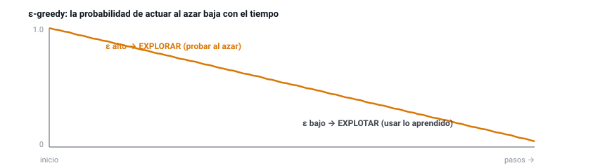
PPO y SAC exploran de otra manera: su política ya incorpora cierta aleatoriedad al elegir, de modo que no siempre toma la misma acción. La diferencia entre elegir siempre lo mismo (predecible) y repartir entre varias acciones:
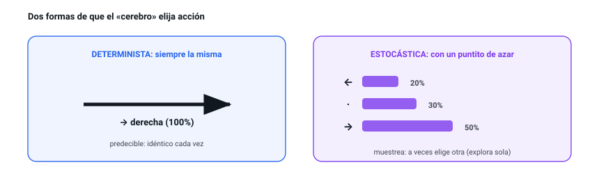
SAC, además, premia mantener variedad en sus decisiones: un agente que siempre hace lo mismo deja de descubrir alternativas mejores. Esa variedad también se mide con un número:
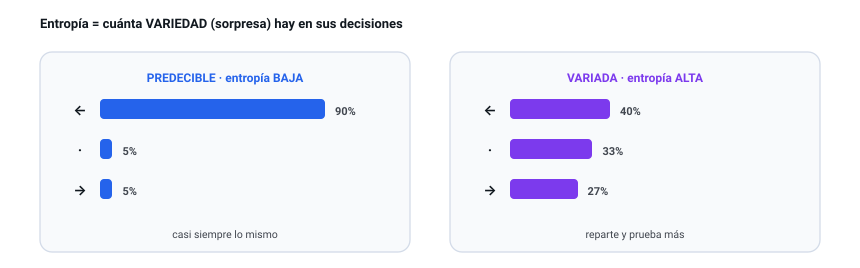
¿Cómo de buena es una situación? El «valor»
Cuando juegas, intuyes al vuelo si una jugada «pinta bien» o si «vas a perder». El agente aprende a ponerle un número a esa intuición: cuántos puntos espera conseguir a partir de esa situación. Si la pala está justo bajo la bola y quedan ladrillos, pinta bien (número alto). Si la bola se escapa por un lado, pinta mal (número bajo).
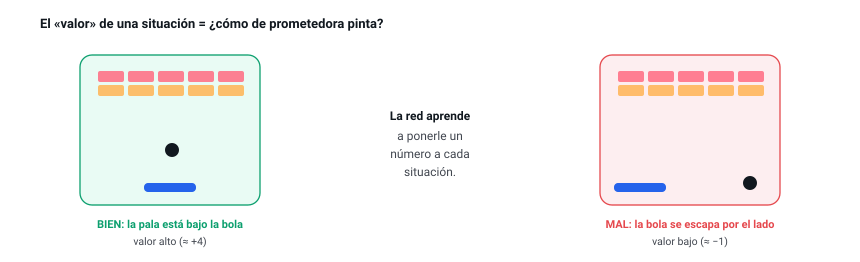
El truco para no mirar infinitos pasos (Bellman)
¿Cómo estimamos el valor de algo si depende de todo el futuro? El truco de Bellman es recursivo: el valor de tomar una acción ahora = la recompensa inmediata más el valor (descontado) de lo mejor que pueda hacer después. Así, en vez de mirar infinitos pasos, solo miramos un paso y el valor del siguiente estado. Casi todo el RL basado en valor sale de aquí.
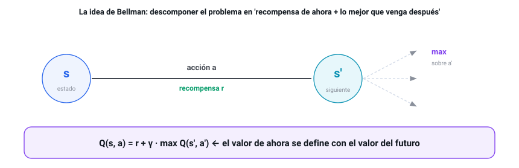
- El agente rompe un ladrillo: recompensa r = +1, el episodio no termina (done = 0).
- La red objetivo estima que, desde el estado siguiente, la mejor acción vale Q'(s', a*) = 3.0. Usamos γ = 0.99.
- Objetivo = r + γ·(1−done)·Q'(s',a*) = 1 + 0.99·1·3.0 = 3.97.
- Si la red creía que Q(s,a) = 2.5, el TD-error es 3.97 − 2.5 = 1.47: una sorpresa grande → experiencia muy informativa (¡por eso el replay prioritario la repetiría más!).
- ¿Por qué Q(s,a) depende de Q(s',·) y no solo de r?
- Si done = 1 (el episodio termina), ¿cuánto aporta el término del futuro?
- ¿Qué significa, en una frase, un TD-error grande?
Las recompensas de este Arkanoid
Una recompensa de solo +1 / −1 sería pobre: el agente recibiría señal en muy pocos momentos. Aquí usamos varios eventos de distinta magnitud para dar pistas más ricas y frecuentes. Esta es la lista completa de recompensas del entorno (todas se suman en cada paso para formar la recompensa del paso):
| Evento | Recompensa | Para qué |
|---|---|---|
| Cada paso (vivir) | 0.0 | No penalizamos sobrevivir: el agente no tiene prisa por terminar. (Podría ponerse un pequeño coste negativo para incentivar la rapidez.) |
| Romper un ladrillo | +1.0 | El objetivo del juego. Premio claro y repetible. |
| Combo (ladrillos seguidos) | +0.5 · (n−1) | Bonus por cada ladrillo extra de una misma subida, sin que la bola vuelva a la pala. El 1.º suma +1, el 2.º +1.5, el 3.º +2… Premia reventar varios de golpe. |
| Devolver la pelota (rebote) | +0.2 | Premio intermedio: enseña a no perder la pelota antes de saber romper ladrillos. |
| Perder la pelota | −1.0 | Castigo terminal: termina el episodio. Le enseña a colocar la pala. |
| Completar el nivel | +5.0 | Gran premio terminal por limpiar los 80 ladrillos del nivel. |
| Acercar la pala a la pelota | shaping ≈ +0.3·Δ | Recompensa densa y telescópica (potential shaping): da señal en cada paso sin cambiar la política óptima. Acelera mucho el aprendizaje inicial. |

De la neurona a la red
La pieza básica es la neurona: toma varias entradas, las combina con unos pesos (su importancia), suma un sesgo y pasa el resultado por una activación (aquí ReLU, que deja pasar lo positivo y pone a cero lo negativo). Apilando muchas neuronas en capas obtenemos una red capaz de aprender relaciones complejas.
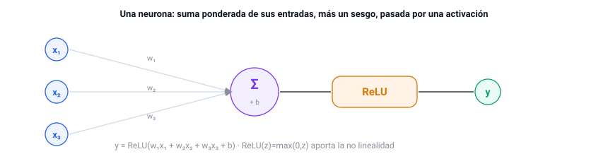
La red que usamos: dos ojos, una decisión
¿Cómo "decide" el agente? Mediante una red neuronal: una función con miles de parámetros (pesos) que se ajustan para acertar cada vez más. Pero la nuestra no es un simple MLP. Su estado tiene dos naturalezas muy distintas —unos pocos números que se mueven (la cinemática) y una rejilla de ladrillos (la visión)—, así que la red tiene dos ramas que procesan cada parte como merece y luego se unen:
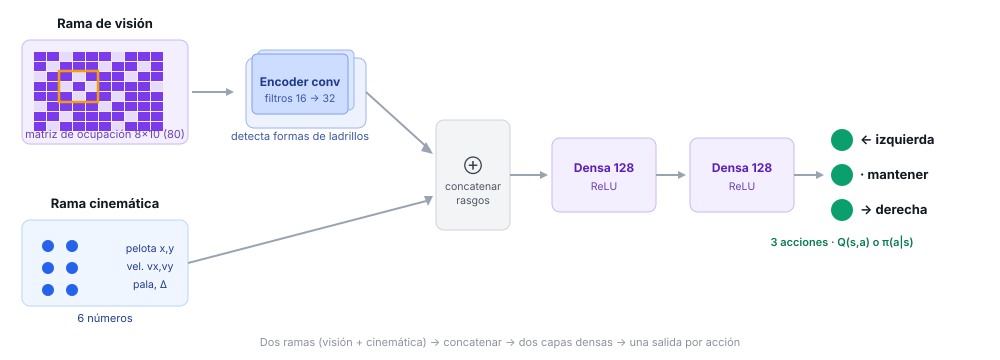
Aprender = ir afinando los mandos
¿Y cómo «aprende» de verdad la red? Imagina que afinas una radio antigua girando el dial poco a poco hasta que se oye claro, o un termostato hasta dar con la temperatura justa. La red hace lo mismo con sus miles de mandos internos (sus pesos): mide cuánto se ha equivocado y mueve cada mando un poquito en la dirección que reduce el error. Repetido millones de veces, va «sonando» cada vez mejor.
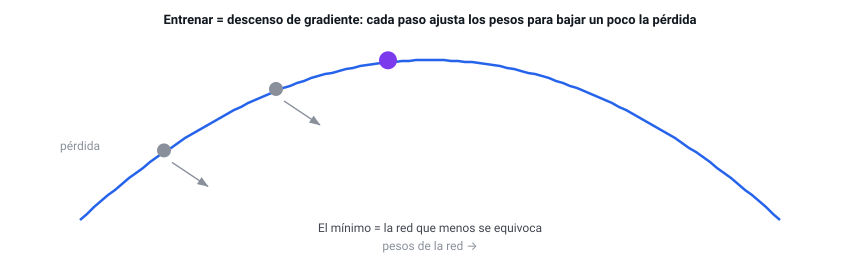
Red actual y red objetivo
Para entrenar necesitamos un objetivo al que acercar las predicciones. En RL ese objetivo se construye con la propia red (ecuación de Bellman), así que si usáramos la misma red para predecir y para fijar su objetivo, este se movería a cada paso: como intentar alcanzar tu propia sombra. La solución son dos copias de la red:
La tercera pieza: el buffer de experiencia
Las dos redes deciden y se corrigen, pero ¿de dónde salen los ejemplos con los que se corrigen? De una tercera pieza igual de importante: el buffer de experiencia (en inglés, replay buffer), una libreta gigante donde el agente apunta cada jugada que vive: el estado en que estaba, la acción que hizo, la recompensa que ganó y el estado al que pasó. En vez de aprender solo de la última jugada y olvidarla, guarda 100.000 y, en cada paso de entrenamiento, saca un puñado al azar para repasar.
No todos los algoritmos usan esta libreta. Los que reaprovechan datos viejos (DQN, SAC, World Model) sí; PPO, en cambio, usa lo recién jugado y lo tira. Veremos esa diferencia —off-policy frente a on-policy— en la anatomía.
Del juego a la red neuronal
Los cinco algoritmos comparten la misma maquinaria. Este es el ciclo que se repite en cada paso de entrenamiento; el mismo esqueleto sirve para cualquier proyecto de aprendizaje por refuerzo: cambia el juego y el algoritmo, pero las piezas (entorno, agente, memoria, bucle, métricas) son siempre las mismas.
Los cinco inquilinos de esta maquinaria
En este laboratorio conviven cinco algoritmos distintos. Todos usan el mismo esqueleto que verás en esta sección; se diferencian en qué aprenden y en cómo guardan la experiencia. Esta es la vista de pájaro antes de entrar al detalle de cada uno:
Aprende cuánto vale cada acción en cada situación (un número por acción) y elige la de mayor valor. Guarda la experiencia en un almacén grande y la reutiliza muchas veces. Eficiente y sobrio.
Aprende directamente la estrategia: con qué probabilidad conviene cada acción. Usa los datos recién jugados y los descarta. Es el más robusto y predecible de afinar.
Como PPO aprende una estrategia, pero además se premia por mantener variedad en sus decisiones. Eso le hace explorar muy bien y no encasillarse pronto.
Primero aprende un simulador del propio juego y luego entrena también imaginando partidas dentro de él. Así exprime al máximo cada dato real. El más ambicioso.
El mismo World Model, pero su simulador es un LSTM con memoria: en vez de mirar cada instante por separado, aprende de secuencias y recuerda hacia dónde iban las cosas, así imagina trayectorias más coherentes.
Esta tabla es solo el "quién es quién". Cada algoritmo tiene después su propio capítulo con su red, su función de pérdida, sus parámetros y sus resultados; y al final, una tabla comparativa de los cinco cara a cara.
1 · Cómo arranca y se ejecuta el juego
El entorno es una simulación pura: no dibuja nada, solo calcula física. Vive en entornoArkanoid.js. Al crearse o reiniciarse coloca los 80 ladrillos (8 filas × 10 columnas), lanza la pelota con una dirección aleatoria y sitúa la pala. La clave de diseño es que la física es de paso fijo: cada llamada a paso(accion) avanza exactamente un instante de simulación. El control de velocidad no acelera la física (eso cambiaría la dinámica y rompería el aprendizaje): solo decide cuántos pasos se ejecutan por fotograma.
// Avanza un paso de simulación aplicando la acción del agente. paso(accion) { if (this.estaTerminado()) return { recompensa: 0, done: true }; this.pasos++; this.recompensaPaso = RECOMPENSAS.PASO; // 0 por paso (no penaliza sobrevivir) this._aplicarAccion(accion); // mueve la pala ← · → this._moverPelota(); // x += vx ; y += vy (paso fijo) this._colisionParedes(); this._colisionPala(); // +0.10 si devuelve la pelota this._colisionLadrillos(); // +1.0 por ladrillo roto this._verificarFin(); // −1.0 si pierde la pelota; +5.0 si limpia el nivel this._aplicarShaping(); // recompensa densa: acercarse a la pelota this.recompensaEpisodio += this.recompensaPaso; return { recompensa: this.recompensaPaso, done: this.estaTerminado() }; }

El episodio: una partida con principio y fin
La unidad natural del aprendizaje por refuerzo es el episodio: una partida completa, desde que se saca la pelota hasta que esa partida acaba. Un episodio termina siempre de una de tres maneras:
En cuanto un episodio termina, ese entorno se reinicia solo y empieza otro inmediatamente: el agente nunca para de jugar. La recompensa del episodio es la suma de las recompensas de todos sus pasos, y es justo lo que el agente intenta maximizar. Por eso la métrica estrella es la recompensa media de los últimos 100 episodios: una sola partida es ruidosa (hay suerte), pero el promedio de 100 cuenta la verdad de si está mejorando.
Dos maneras de que el agente "vea" el juego
Para que una IA juegue hay dos caminos, y elegir bien marca la diferencia entre entrenar en horas o en semanas:
Darle los píxeles de la imagen y que aprenda a interpretarlos. Es lo más general (sirve para cualquier juego) pero carísimo: la red debe primero entender qué es una pelota mirando miles de imágenes, y luego aprender a jugar. Necesita redes enormes y millones de partidas.
Aprovechar que nosotros programamos el juego y conocemos sus variables. En vez de píxeles, le pasamos un puñado de números que ya resumen la situación. La red se ahorra "ver" y se concentra en decidir. Aprende muchísimo más rápido con redes pequeñas.
Hemos elegido el segundo camino: como el juego es nuestro, damos al agente 6 variables cinemáticas más la matriz de ocupación 8×10 de los ladrillos (visión por matriz, no por píxeles). Es el mismo principio que usar el marcador y la posición en vez de una foto del campo.
return [ p.x * 2 - 1, p.y * 2 - 1, // posición de la pelota → [-1,1] p.vx / CFG.VELOCIDAD_PELOTA, p.vy / CFG.VELOCIDAD_PELOTA, // velocidad → [-1,1] this.pala.x * 2 - 1, // posición de la pala limitar((p.x - this.pala.x) * 2, -1, 1), // distancia horizontal pelota↔pala ];
2 · Cómo enganchamos los controles: el agente "juega"
En un Arkanoid normal, un humano pulsa teclas. Aquí el agente sustituye al jugador: en cada paso, su red recibe el estado y devuelve la acción. Y como queremos aprender deprisa, no jugamos una partida, sino cientos a la vez: el estado de los N entornos se apila en un único tensor [N × 6] y la red predice las N acciones de una sola pasada por la GPU (inferencia en lote). Esto es lo que hace que WebGPU rente: una llamada grande en vez de N pequeñas.
seleccionarAcciones(estadosFlat, n, { entrenar = true } = {}) {
const eps = entrenar ? this.epsilon : 0; // ε = probabilidad de explorar al azar
const greedy = tf.tidy(() => {
const sT = this._tensorEstados(estadosFlat, n); // tensor [N × 6]
return this.redPolitica.predict(sT).argMax(1).dataSync(); // mejor acción de cada entorno
});
const acciones = new Int32Array(n);
for (let i = 0; i < n; i++) // ε-greedy: a veces exploro, casi siempre exploto
acciones[i] = Math.random() < eps ? (Math.random()*this.numAcciones)|0 : greedy[i];
return acciones; // N acciones, una por partida
}

3 · Dos mundos: entrenar rápido y observar bonito
Si atáramos el aprendizaje a lo que se dibuja, estaríamos limitados a 8 ó 15 partidas. Por eso hay dos pools de entornos separados (gestorEntornos.js):
El pool headless (sin canvas) corre cientos de partidas para alimentar a la red. El pool visual ejecuta la misma política solo para que tú veas cómo juega. Es una ventana de observación, no el motor.

4 · Cómo se guardan los datos para el entrenamiento
La unidad de experiencia es la transición: (s, a, r, s', done) — "estaba en el estado s, hice la acción a, gané r, acabé en s', y el episodio terminó (o no)". Cada paso de cada entorno produce una. El gestor las empaqueta en arrays planos (muy eficientes para crear tensores) y se las pasa al agente para que las guarde.
¿Dónde se guardan? Depende de la familia del algoritmo:
// Inserta un lote de transiciones en formato plano (buffer circular). agregarLote(lote) { const n = lote.recompensas.length; for (let i = 0; i < n; i++) { const baseDst = this.pos * this.dim, baseSrc = i * this.dim; for (let k = 0; k < this.dim; k++) { this.s[baseDst + k] = lote.estados[baseSrc + k]; // estado s this.s2[baseDst + k] = lote.siguientes[baseSrc + k]; // estado siguiente s' } this.a[this.pos] = lote.acciones[i]; // acción a this.r[this.pos] = lote.recompensas[i]; // recompensa r this.done[this.pos] = lote.terminados[i]; // done this.pos = (this.pos + 1) % this.capacidad; // circular: pisa lo más viejo if (this.tam < this.capacidad) this.tam++; } }
5 · El bucle de entrenamiento (la pieza que lo une todo)
El orquestador.js no sabe de algoritmos ni de pantallas: solo repite un ciclo. Esta es una iteración (un "lote"): se observan los estados, el agente decide, el juego avanza, se guarda la experiencia y el agente entrena. Es el corazón que late decenas de veces por segundo.
async ejecutarLote() {
const n = gestor.numHeadless;
const estados = gestor.obtenerEstadosEntrenamiento(); // 1· observar los N estados
const acciones = this.agente.seleccionarAcciones(estados, n); // 2· la red decide N acciones
const resultado = gestor.aplicarAcciones(acciones); // 3· el juego avanza N pasos
this.agente.almacenarExperiencia(resultado); // 4· guardar (s,a,r,s',done)
this.metricas.registrarEpisodios(resultado.episodios); // 5· anotar episodios terminados
const metrica = await this.agente.entrenar(); // 6· UN paso de aprendizaje
this.pasoGlobal += n;
// 7· cada 250 pasos: registrar una traza y avisar a la UID por el bus de eventos
}Tres preguntas que aclaran cómo es realmente el entrenamiento:
6 · Cómo se entrena la red neuronal (el paso de gradiente)
Entrenar una red es ajustar sus pesos para que se equivoque menos. En RL no tenemos "respuestas correctas": construimos un objetivo a partir de la recompensa y de lo que la propia red cree que vale el futuro (ecuación de Bellman), y empujamos la predicción hacia ese objetivo. El truco para que no diverja es usar una red objetivo: una copia que se mueve despacio y nos da un blanco estable al que apuntar.
// El objetivo TD se calcula SIN gradiente (es el "blanco" estable). const objetivo = tf.tidy(() => { const aStar = this.redPolitica.predict(s2T).argMax(1); // Double DQN: la red online elige a* const qSig = this.redObjetivo.predict(s2T)...sum(1); // la red objetivo la evalúa return rT.add(qSig.mul(gamma).mul(noTerm)); // r + γ·(1-done)·Q'(s',a*) }); // Un paso de descenso de gradiente: acerca Q(s,a) al objetivo (pérdida Huber). const lossT = this.optimizador.minimize(() => { const qa = this.redPolitica.predict(sT).mul(aOneHot).sum(1); return tf.losses.huberLoss(objetivo, qa); }, true, this._varsPolitica); // La red objetivo sigue a la online MUY despacio (Polyak): estabilidad. actualizacionSuave(this.redPolitica, this.redObjetivo, tau); // τ = 0.01
7 · Cómo se van actualizando las gráficas
El orquestador no toca la pantalla: emite trazas por un bus de eventos. La UI está suscrita y, cuando llega una traza nueva (cada 250 pasos), refresca las tarjetas de métricas y redibuja las cuatro curvas en sus <canvas>. Así el motor y la interfaz quedan desacoplados: podrías entrenar sin pantalla (lo hacemos en Node) o cambiar la UI sin tocar el algoritmo.
Así se ve la diferencia entre el arranque (sin datos) y tras unos segundos de entrenamiento real:


Qué cuenta cada curva
El panel dibuja cuatro curvas. Las dos primeras son iguales en los cinco algoritmos; las otras dos cambian porque miden el mecanismo propio de cada uno.
Y estas son las dos curvas propias de cada algoritmo (las explicamos en detalle en su capítulo):
| Modelo | Tercera curva | Cuarta curva |
|---|---|---|
| DQN | Buffer: cómo se llena la memoria (0 → 100.000). | ε: el azar baja poco a poco; explora menos según aprende. |
| PPO | Pérdida del crítico: cómo de bien estima el valor de cada situación. | Entropía: cuánta variedad mantiene; baja despacio al decidirse. |
| SAC | Temperatura α: cuánto se premia a sí mismo por explorar (se autorregula). | Entropía: la variedad de sus decisiones. |
| World Model | Error del modelo: cuánto falla su simulador interno (baja = predice mejor). | ε: el azar de exploración, igual que en DQN. |

DQN — Deep Q-Network
¿Qué es DQN?
DQN aprende una función Q(s,a): dado un estado, estima la recompensa futura total que cabe esperar si tomamos cada acción y luego seguimos jugando bien. Con esa tabla de valores, actuar es trivial: elige la acción de mayor Q. Lo "deep" es que esa función Q no es una tabla, sino una red neuronal, capaz de generalizar a estados que nunca vio exactamente.
¿Para qué sirve? (en el mundo real)
DQN fue el primer algoritmo que aprendió a jugar decenas de juegos de Atari a nivel humano solo a partir de píxeles.
Decisiones del tipo "encender/apagar/mantener": climatización, gestión de colas, semáforos.
Elegir el siguiente contenido a mostrar para maximizar el interés a largo plazo.
Decidir cuándo cargar/descargar una batería según precio y demanda.
Cómo funciona (su estructura)
DQN no guarda Q(s,a) en una tabla (imposible con un estado continuo): usa una red neuronal para aproximar Q. Sobre el encoder convolucional descrito en Fundamentos · La red neuronal: entra el estado (6 cinemáticos + matriz 8×10) del estado, pasan por dos capas ocultas de 128 neuronas (ReLU) y salen 3 valores Q, uno por acción. Para estabilizar el entrenamiento mantenemos dos copias: la red actual (decide y se entrena) y la red objetivo (copia lenta que fija el blanco de Bellman), tal y como se explica en Fundamentos.
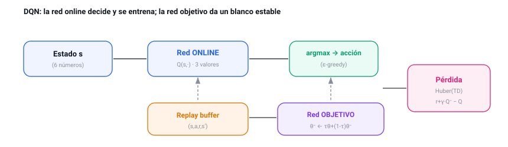
- En el estado actual, la red da Q = [0.2, 0.8, 0.5] para [←, ·, →].
- Con ε = 0.1: el 90% de las veces elige el máximo (·, Q=0.8); el 10%, una acción al azar (explorar).
- Para entrenar (Double DQN): la red online dice que en el estado siguiente la mejor acción es «→»; la red objetivo la valora en 1.2. El objetivo es r + γ·1.2.
- Separar quién elige (online) de quién evalúa (objetivo) evita que un Q inflado por ruido se realimente. Eso es Double DQN.
Tres estabilizadores para que DQN no se rompa
Un DQN "ingenuo" tiende a desbocarse, porque persigue un objetivo que él mismo va moviendo. Tres mejoras clásicas lo domestican, y las tres están activas en este laboratorio:
La función de pérdida: ¿qué error minimizamos?
Entrenar la red consiste en acortar la distancia entre lo que predice (Q(s,a)) y el objetivo de Bellman. Pero "distancia" se puede medir de varias formas, y elegir bien evita muchos disgustos:
| Opción | Cómo mide el error | Por qué la elegimos o no |
|---|---|---|
| MSE (cuadrático) | Eleva el error al cuadrado. | Un objetivo ruidoso —y los hay— genera un error enorme que domina el ajuste y desestabiliza. Descartada. |
| MAE (absoluto) | El valor absoluto del error. | Robusto, pero su empuje es constante: cerca del acierto no afina. Descartada. |
| Huber ✓ (la nuestra) | Cuadrático cerca de 0, lineal lejos. | Lo mejor de ambas: afina de cerca como MSE y no se desboca con errores grandes como MAE. |
El experimento: objetivo, entorno y parámetros
El entorno. Arkanoid 8×10: el agente observa 6 cinemáticos + la matriz de ocupación de 80 ladrillos, dispone de 3 acciones y recibe +1 por ladrillo, +0.2 por devolver la pelota y −1 por perderla. El objetivo: maximizar la recompensa acumulada por episodio.
| Ajuste | Valor | Qué es y qué efecto tiene |
|---|---|---|
| learning_rate | 8e-4 | El tamaño de cada paso de aprendizaje. Grande = rápido pero inestable; pequeño = lento pero estable. |
| gamma (γ) | 0.99 | Cuánto importan las recompensas futuras frente a las inmediatas (0 = cortoplacista, →1 = previsor). |
| epsilon (ε) | 1.0 → 0.05 | Probabilidad de explorar al azar; decae a lo largo de 12.000 pasos hacia 0.05 (casi siempre explotar). Este valor se afinó tras el análisis: ver más abajo. |
| replay buffer | 100.000 | Cuántas experiencias recordamos para muestrear lotes aleatorios. |
| batch_size | 128 | Cuántas transiciones se usan en cada paso de gradiente. |
| tau (τ) | 0.01 | Velocidad a la que la red objetivo sigue a la principal (1% por paso): estabilidad. |
¿Por qué estos parámetros? (búsqueda en rejilla)
Los dos ajustes más delicados de DQN son el ritmo de aprendizaje (learning rate) y cuánto pesa el futuro (γ). Para no elegirlos a ojo, barrimos una rejilla de 3×3 combinaciones; cada una entrenó 45.000 pasos y medimos la recompensa final alcanzada:
| learning rate | γ = 0.97 | γ = 0.99 | γ = 0.995 |
|---|---|---|---|
| 3e-4 · lento | 1.44 | 1.53 | 1.80 |
| 8e-4 · el nuestro | 1.88 | 2.41 | 1.62 |
| 1.5e-3 · rápido | 2.62 | 1.26 | 2.23 |
El ritmo rápido (1.5e-3) logra el pico más alto (2.62)… pero también el peor resultado de toda la rejilla (1.26): es el más inestable, con una varianza enorme entre corridas. El lento (3e-4) aprende de forma consistente pero se queda corto (máximo 1.80). Nuestro valor (8e-4 con γ = 0.99) alcanza 2.41: el mejor resultado de la zona estable, sin las caídas bruscas del rápido. De ahí que sea el valor por defecto: rendimiento alto y baja varianza.
Cada celda es una sola corrida de 45.000 pasos, así que conviene leer estos números como tendencias, no como medias exactas: el RL es ruidoso (la fila del 1.5e-3 lo grita). Aun así, el patrón —el ritmo intermedio es el más fiable— es claro.
La interfaz


Resultados
En una ejecución real en el navegador (WebGPU), la recompensa media de los últimos 100 episodios sube de ~0.0 a ~0.9 en cuestión de segundos, con un ritmo de ~24.000 experiencias/s. Con entrenamientos más largos (los 45.000 pasos de la rejilla anterior) la media supera el 2. El agente aprende con claridad a seguir y devolver la pelota; limpiar el nivel completo (éxito en test) exige el protocolo congelado del capítulo de resultados, no más "tiempo de entrenamiento".
Interpretación: qué pasó al entrenar
- La recompensa sube rápido de ~0 a ~0.9 y luego asciende más despacio.
- Al decaer ε y explotar más, la curva se vuelve más estable.
- La tasa de éxito (limpiar el nivel) se mide en serio en la comparativa congelada (capítulo «El resultado»), no en estas runs cortas del lab.
- Aprende sin dudar a seguir y devolver la pelota.
- Double DQN + Huber + soft update: cero divergencias.
- Memoria plana (26 tensores) de principio a fin.
- Romper los últimos ladrillos pide exploración más lista que el puro azar → ahí brillará SAC.
- Probar repaso priorizado (revisar más las jugadas sorprendentes).
- Entrenar más pasos: 45k se queda corto para subir la tasa de éxito.
Conclusiones
DQN es el primero de los cinco y hará de línea de base: los siguientes algoritmos los compararemos contra él. Su gran virtud es la eficiencia con los datos (reutiliza cada experiencia muchas veces) a cambio de necesitar varios estabilizadores para no romperse.
PPO — Proximal Policy Optimization
Primero: ¿qué es una "política"?
Una política es, sencillamente, la estrategia del agente: su "instinto" de qué hacer en cada situación. En la práctica es una función que, dado un estado, reparte probabilidades entre las acciones: "en esta posición, 60% moverme a la derecha, 30% quedarme quieto, 10% a la izquierda". Jugar es consultar ese instinto y dejarse llevar (a veces probando lo menos probable, para explorar). Esa estrategia se denomina política, π(a|s).
¿Qué es PPO?
DQN aprendía cuánto vale cada acción y deducía la jugada a partir de esos valores. PPO va directo al grano: ajusta la estrategia misma, subiendo la probabilidad de las acciones que salieron bien y bajando la de las que salieron mal. Para saber qué fue "bien" o "mal" se apoya en una segunda red, la crítica, que estima cómo de buena era la situación (su valor); al comparar lo que de verdad ocurrió con lo que la crítica esperaba se obtiene la ventaja: cuánto mejor (o peor) salió la acción de lo previsto. PPO es hoy el caballo de batalla del RL: estable, robusto y fácil de afinar.
¿Para qué sirve? (en el mundo real)
Acciones continuas o discretas en robots, brazos y locomoción; es el algoritmo por defecto en muchas suites.
PPO se usó para alinear modelos de lenguaje con preferencias humanas (la "P" de ChatGPT entrenado con RLHF).
Dota 2 (OpenAI Five) y muchos entornos de simulación se entrenaron con PPO a gran escala.
Control de sistemas donde la estabilidad del entrenamiento es crítica.
Cómo funciona (su estructura)
Dos redes MLP independientes: el actor (6 → 128 → 128 → 3 logits → softmax = probabilidades) y la crítica (6 → 128 → 128 → 1 = valor del estado).
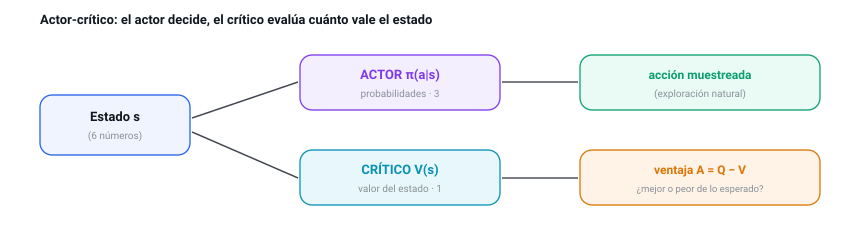
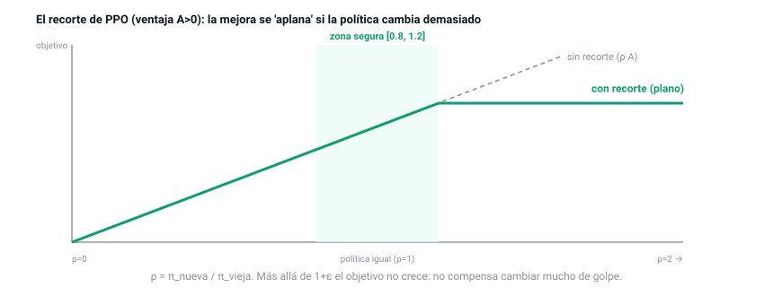
- El agente tomó «→» y resultó mejor de lo esperado: ventaja A = +2.
- La política nueva hace esa acción un 30% más probable que la vieja → ratio ρ = 1.3.
- Objetivo sin recortar: ρ·A = 1.3·2 = 2.6. Pero ρ=1.3 supera el límite 1+ε = 1.2 → se recorta a 1.2·2 = 2.4.
- PPO toma el mínimo: min(2.6, 2.4) = 2.4. Así, por mucho que mejore, no deja que la política se mueva más de un 20% de golpe: estabilidad.
La función de pérdida: por qué el recorte
La idea de "subir la probabilidad de lo que salió bien" tiene una trampa: si te pasas, destrozas la política de un solo paso. Había tres formas de evitarlo, y elegimos la tercera:
| Opción | Qué hace | Por qué la elegimos o no |
|---|---|---|
| Gradiente "a pelo" (REINFORCE) | Empuja cada acción según su ventaja, sin freno. | Un lote afortunado provoca un paso gigante que arruina lo aprendido. Demasiado inestable. |
| TRPO | Limita el cambio con una restricción matemática exacta. | Funciona, pero es caro y enrevesado de implementar (optimización con restricciones). |
| PPO-clip ✓ (la nuestra) | Recorta el ratio para que el paso nunca sea grande. | Una aproximación barata y simple a TRPO: casi todo el beneficio, una fracción del coste. |
Esa pérdida del actor no va sola. La pérdida total que minimiza PPO suma tres términos: el objetivo recortado (mejora la política con freno), el error de la crítica (que aprenda a estimar bien el valor) y un premio a la entropía (para no dejar de explorar).
El experimento: objetivo, entorno y parámetros
Mismo entorno Arkanoid. PPO es on-policy: recoge un rollout, lo exprime en varias épocas y lo tira.
| Ajuste | Valor | Qué es y qué efecto tiene |
|---|---|---|
| longitud_rollout | 256 | Pasos por entorno que se recogen antes de cada actualización. |
| épocas | 4 | Cuántas veces se reaprovecha cada rollout antes de descartarlo. |
| clip ε | 0.2 | Cuánto se permite cambiar la política por actualización (el "freno"). |
| GAE λ | 0.95 | Equilibrio sesgo/varianza al estimar la ventaja (0 = solo 1 paso; →1 = muchos pasos). |
| coef_entropía | 0.003 | Premia mantener algo de aleatoriedad en la política. Se bajó de 0.01 a 0.003 tras el análisis (la política no se comprometía): ver más abajo. |
| max_norma_grad | 0.5 | Recorta el gradiente para que ningún paso sea desmesurado. |
La interfaz


Resultados
PPO aprende de forma muy estable (curva monótona). En ejecución real, la recompensa pasó de ~0.1 a ~0.99 en el navegador, y en una corrida más larga en CPU alcanzó ~4.08 (ya rompe varios ladrillos por episodio). La entropía se mantiene alta al principio y baja despacio según la política se afila.

Interpretación: qué pasó al entrenar
- Curva monótona: sube sin las caídas bruscas de DQN.
- Reward ~0.99 en el navegador; ~4.08 en una corrida larga en CPU.
- La entropía arranca alta y baja despacio al afilarse la política.
- El recorte evita el colapso: es el más estable de los cinco.
- Llega a romper varios ladrillos por episodio.
- Apenas necesita afinado: funciona "a la primera".
- Al ser on-policy tira lo jugado: necesita más experiencias que DQN para lo mismo.
- Probar rollouts más largos y bajar el ritmo de aprendizaje al final.
Comparación con el modelo anterior (DQN)
| Eje | DQN (01) | PPO (02) |
|---|---|---|
| Qué aprende | El valor de cada acción. | La estrategia (probabilidades) directamente. |
| Memoria | Replay buffer (reutiliza lo viejo). | Rollout: usa y tira. |
| Estabilidad | Buena, pero con picos y caídas. | La mejor: curva suave. |
| Eficiencia en datos | Alta (off-policy). | Menor (on-policy). |
| Afinado | Sensible (varios estabilizadores). | Fácil, robusto. |
En resumen: DQN exprime más cada dato, pero PPO es más estable y más fácil de manejar. Si DQN era el cimiento, PPO es la opción "sin sustos".
Conclusiones
¿Qué nos llevamos, en lenguaje de andar por casa? Que PPO fue, tras afinarlo, el que más aprendió y el que antes empezó a jugar bien. Y una lección que vale más que cualquier número: el mayor salto no vino de cambiar de algoritmo, sino de dejar que la política se atreviera a decidir en vez de quedarse indecisa (eso fue bajar la "entropía"). Si tuvieras que elegir uno para empezar a resolver un problema nuevo sin sustos, PPO es la apuesta segura.
SAC — Soft Actor-Critic (discreto)
¿Qué es SAC?
SAC es actor-crítico off-policy con una idea extra: no solo maximiza la recompensa, también la entropía de la política (cuán aleatoria es). Esto mantiene la exploración viva y evita que el agente se "cierre" demasiado pronto en una sola estrategia. Usa dos críticos y un coeficiente de temperatura α que se ajusta solo.
¿Para qué sirve? (en el mundo real)
Es uno de los mejores algoritmos para control de robots reales por su eficiencia de muestra y robustez.
Entornos donde explorar de forma segura y constante es clave.
Tareas con muchas soluciones parecidas, donde mantener variedad ayuda a no estancarse.
Banco de pruebas habitual para estudiar exploración y estabilidad.
Cómo funciona (su estructura)
Un actor (política) y dos críticos Q (más sus dos redes objetivo). Trabajar con el mínimo de los dos críticos evita la sobreestimación de valores.
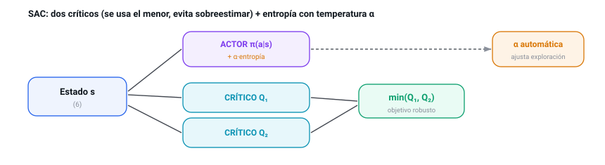
- La política da probabilidades [0.5, 0.3, 0.2]. Su entropía es H = −Σ p·log p ≈ 1.03 (cerca del máximo, log 3 ≈ 1.10).
- La entropía objetivo es 0.55·log 3 ≈ 0.60.
- Como 1.03 > 0.60, el agente explora más de lo deseado → α baja (menos premio a la aleatoriedad) y la política se afila poco a poco.
- Si fuera al revés (política casi fija, H < 0.60), α subiría para forzar más exploración. Por eso α no hay que tocarla a mano: se ajusta sola.
La función de pérdida: tres a la vez (y por qué dos críticos)
SAC no minimiza una pérdida, sino tres a la vez, una por cada cosa que aprende: los críticos (que estimen bien el valor), el actor (que mejore la estrategia buscando recompensa y variedad) y la temperatura α (que se autoajuste). La decisión de diseño más importante es usar dos críticos en vez de uno:
| Opción | Qué hace | Por qué la elegimos o no |
|---|---|---|
| Un crítico | Una sola red estima el valor. | Tiende a sobreestimar: se cree los valores optimistas y los realimenta. Inestable. |
| Dos críticos, usar el mínimo ✓ | Dos redes; se confía en la más pesimista. | Pesimista a propósito: no se traga los valores inflados. Es lo que da estabilidad a SAC. |
El experimento: objetivo, entorno y parámetros
| Ajuste | Valor | Qué es y qué efecto tiene |
|---|---|---|
| lr_actor / crítico / α | 6e-4 / 8e-4 / 6e-4 | Tres ritmos de aprendizaje, uno por red. El crítico aprende algo más rápido. |
| tau (τ) | 0.01 | Velocidad de las dos redes objetivo (soft update). |
| entropía objetivo | 0.55·log 3 | Cuánta aleatoriedad queremos mantener; gobierna hacia dónde empuja α. |
| batch / buffer | 128 / 100.000 | Es off-policy: reutiliza experiencias de un replay buffer. |
La interfaz


Resultados
SAC aprende y la temperatura se estabiliza sola. En el navegador, la recompensa subió de ~0.0 a ~0.99, con α descendiendo de 0.20 a ~0.165 y la entropía manteniéndose alta (exploración sana). Sin fugas: 76 tensores constantes durante todo el entrenamiento.

Interpretación: qué pasó al entrenar
- La recompensa sube a ~0.99 y la temperatura α baja sola de 0.20 a ~0.165.
- La entropía se mantiene alta: explora sano, no se encasilla.
- Memoria plana: 76 tensores constantes (más que DQN: tiene más redes).
- El doble crítico evitó que los valores se dispararan.
- La α automática ahorró el ajuste más delicado a mano.
- Exploración constante sin perder estabilidad.
- Es el más pesado: actor + 2 críticos + 2 objetivos. Más cómputo por paso.
- Ajustar la entropía objetivo (0.55·log 3) según la fase del entrenamiento.
- Runs más largas para traducir su buena exploración en romper más ladrillos.
Comparación con el modelo anterior (PPO)
| Eje | PPO (02) | SAC (03) |
|---|---|---|
| Familia | Actor-crítico on-policy. | Actor-crítico off-policy. |
| Cómo explora | Premio fijo a la entropía. | Premio a la entropía con α que se autorregula. |
| Memoria | Rollout (usa y tira). | Replay buffer (reutiliza). |
| Coste por paso | Bajo (2 redes). | Alto (5 redes). |
| Eficiencia en datos | Menor. | Alta. |
SAC es como un PPO que no tira la experiencia y que gestiona la exploración por sí mismo: aprende con menos partidas a cambio de más cálculo por paso. Donde PPO es sencillo y estable, SAC es eficiente y curioso.
Conclusiones
La idea que conviene quedarse de SAC es que explorar bien no tiene por qué ser explorar al azar. En vez de tirar un dado (como DQN), SAC deja que el propio agente regule su "curiosidad" sobre la marcha, y eso le dio el aprendizaje más estable y suave de los cinco. Es el que elegirías cuando cada partida cuesta cara y quieres aprovechar cada dato sin que el entrenamiento dé bandazos.
World Model — Dyna-Q
¿Qué es un World Model?
Los tres anteriores son model-free: aprenden qué hacer sin entender el entorno. Un World Model es model-based: aprende un modelo de la dinámica —una red que predice, dado (s, a), cuál será el siguiente estado s', la recompensa r y si termina— y lo usa para generar experiencia imaginada con la que entrenar (Dyna-Q). Así exprime cada paso real muchas veces.
¿Para qué sirve? (en el mundo real)
Robots reales o procesos donde cada paso cuesta tiempo/dinero: imaginar multiplica los datos disponibles.
Modelos del mundo (MuZero, Dreamer) que planifican mirando hacia delante con su propio simulador aprendido.
Aprender buenas políticas con muchos menos episodios reales.
Sustituir un simulador caro por una red rápida que lo aproxima.
Cómo funciona (su estructura)
Dos piezas: un Q-net (como DQN) que decide, y un modelo de dinámica (6+3 entradas → 200 → 200 → Δs, r, done) que predice el futuro. El modelo predice el incremento Δs (más estable que s' directo): s' = s + Δs.
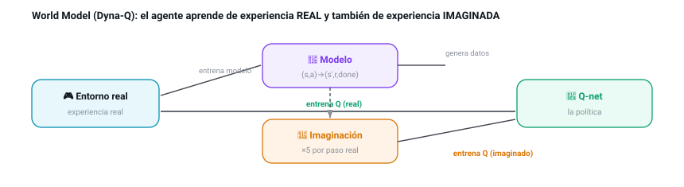
- Se toma un estado real del buffer; el agente (greedy) elegiría «→».
- El modelo predice: la bola sube un poco (Δs), recompensa r ≈ 0 (aún no rompe nada), done = no.
- Con s' = s + Δs ya tenemos una transición imaginada (s, →, 0, s', no), sin haber tocado el juego real.
- El Q-net entrena con ella igual que con una real (Bellman). Y esto se repite 5 veces por cada paso real → 5× más aprendizaje… siempre que el modelo acierte (por eso vigilamos su error RMSE).
La función de pérdida: dos aprendizajes, dos pérdidas
El World Model aprende dos cosas distintas a la vez, así que tiene dos pérdidas:
La decisión de diseño clave está en qué predice el modelo:
| Opción | Qué predice | Por qué la elegimos o no |
|---|---|---|
| Estado siguiente (s') | La posición absoluta de todo. | Más difícil: cualquier desvío en cada número se nota mucho. Descartada. |
| Incremento (Δs) ✓ | Solo cuánto cambia: s' = s + Δs. | Más fácil y estable: los cambios por paso son pequeños y suaves. Elegida. |
El experimento: objetivo, entorno y parámetros
| Ajuste | Valor | Qué es y qué efecto tiene |
|---|---|---|
| capas del modelo | 200·200 | El modelo de dinámica es algo más grande: tiene que aprender la física. |
| pasos_planning | 5 | Actualizaciones del Q-net con datos imaginados por cada paso real. |
| arranque_modelo | 1.000 | Pasos reales antes de empezar a entrenar el modelo (necesita datos primero). |
| lr_modelo | 1e-3 | Ritmo de aprendizaje del modelo de dinámica (supervisado). |
La interfaz


Resultados
El modelo aprende a predecir la física con un error RMSE ~0.066 sobre estados normalizados (muy bajo: las predicciones siguen de cerca a la realidad, como se ve en el inspector). La recompensa subió de ~0.0 a ~0.71 en el navegador. Sin fugas: ~46 tensores constantes.

Interpretación: qué pasó al entrenar
- El modelo predice la física con un error RMSE ~0.066 (muy bajo).
- La recompensa sube a ~0.71: por debajo de DQN, PPO y SAC.
- Memoria plana (~46 tensores) pese a tener dos redes que entrenar.
- Predecir Δs e imaginar a 1 paso: el modelo se mantiene honesto.
- Los datos imaginados aceleran el aprendizaje del Q-net.
- Es la mayor eficiencia de muestra de los cinco.
- El model bias pone techo: imaginar de más enseña un mundo falso.
- Probar un conjunto de modelos y medir su incertidumbre para imaginar más sin riesgo.
- Alargar el horizonte imaginado solo cuando el modelo sea muy fiable.
Comparación con el modelo del que parte (DQN)
El World Model es, en el fondo, un DQN con un simulador encima: decide con un Q-net idéntico; lo que cambia es de dónde saca la experiencia.
| Eje | DQN (01) | World Model (04) |
|---|---|---|
| Tipo | Model-free. | Model-based (Dyna-Q). |
| De dónde aprende | Solo experiencia real. | Real + imaginada (5× por paso). |
| Eficiencia en datos | Alta. | La más alta… si el modelo acierta. |
| Su riesgo propio | Sobreestimar Q. | Model bias: imaginar un mundo falso. |
| Resultado aquí | ~0.9 (corto). | ~0.71: frenado por el model bias. |
La promesa del World Model es aprender con menos partidas reales; el peaje es que su simulador tiene que ser bueno. Aquí lo es (RMSE bajo), pero el techo de recompensa recuerda que imaginar nunca es del todo gratis.
Conclusiones
El World Model encierra una idea preciosa: si el agente aprende a imaginar el juego, puede practicar "en su cabeza" y exprimir cada partida real muchas veces. Cuando esa imaginación es fiel —como aquí—, aprende con poquísimos datos. El pero, también fácil de entender: si su mundo imaginado se equivoca, practica sobre algo falso; por eso su techo lo marca lo bien que sepa predecir la realidad. Es la opción cuando conseguir datos reales es lento o caro.
World Model RNN — Dyna-Q + LSTM
¿Qué es un World Model recurrente?
Es una variante del World Model anterior. Comparte casi todo con él: aprende un modelo del juego y entrena «imaginando» partidas (Dyna-Q), con un Q-net idéntico al de DQN para decidir. Lo único que cambia es cómo es ese modelo del juego. El World Model normal predice de uno en uno: le das una situación y una acción, y te dice la siguiente, sin recordar nada de lo anterior. Esta variante usa un modelo con memoria: procesa los pasos en orden y va arrastrando un resumen de todo lo que ha visto.
¿Qué es una red recurrente? (de dónde sale la «memoria»)
Conviene parar aquí, porque es la pieza nueva. Las redes que hemos visto hasta ahora funcionan «de un disparo»: entra algo (un estado), sale algo (una acción o un valor), y cada entrada se trata por separado, sin recordar la anterior. Una red recurrente añade una vuelta: parte de lo que calcula se guarda y vuelve a entrar en el paso siguiente. Así, al procesar una secuencia, avanza paso a paso arrastrando un pequeño bloc de notas que actualiza cada vez.
Ese bloc de notas es simplemente un vector de números (aquí, 128) que resume «lo que ha pasado hasta ahora». En cada paso, la red mira la entrada actual y ese bloc, decide qué apuntar (lo actualiza) y produce su predicción. Como el bloc viaja de un paso al siguiente, la red puede tener en cuenta cosas ocurridas varios pasos atrás: eso es tener memoria.
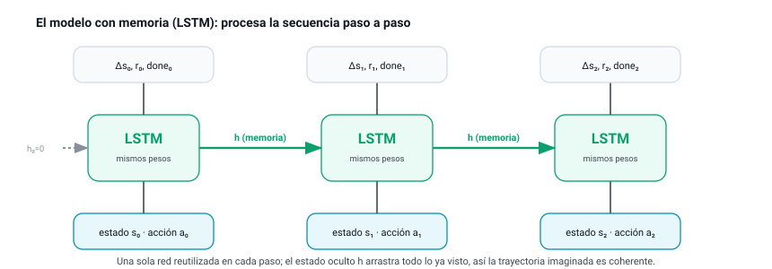
Esto explica dos cosas que veremos enseguida. Primero, por qué necesita secuencias ordenadas para entrenar y no transiciones sueltas barajadas: solo viendo el orden aprende a usar y actualizar su memoria. Segundo, por qué, curiosamente, esta variante prefiere explorar más tiempo que las demás: cuanto más variadas sean las secuencias que ve, mejor aprende su memoria a anticipar.
¿Para qué sirve? (en el mundo real)
Si una sola observación no dice todo (por ejemplo, un fotograma sin velocidad), la memoria reconstruye lo que falta a partir del pasado.
Entornos donde el agente no ve el estado completo: la memoria suple lo oculto recordando lo ya visto.
Series en el tiempo (sensores, audio, texto): predecir el siguiente valor a partir de toda la historia, no solo del último instante.
Es la pieza central de «World Models» (Ha & Schmidhuber): un simulador aprendido que imagina el futuro a partir de imágenes.
Cómo funciona (su estructura)
Las dos piezas son las del World Model —un Q-net que decide y un modelo de dinámica que predice el futuro—, pero el modelo deja de ser un perceptrón de un solo paso y pasa a ser un LSTM. En vez de mirar cada (s, a) por separado, procesa una secuencia de pasos en orden y, en cada uno, mezcla la entrada actual con su memoria del pasado para predecir el incremento Δs, la recompensa y si termina.
Como un LSTM aprende de secuencias ordenadas, no le sirve el replay buffer que baraja transiciones sueltas: necesita su propia memoria que guarde los episodios en orden. Por eso esta variante añade un buffer de secuencias que acumula cada partida completa y luego muestrea tramos contiguos de 16 pasos para entrenar.
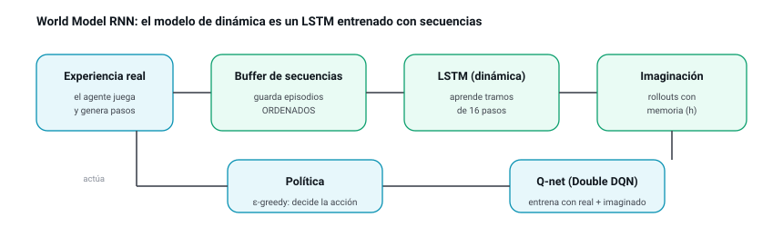
La función de pérdida: aprender secuencias enteras
El modelo recurrente se entrena, como el del World Model, de forma supervisada: acertar el cambio de estado Δs (error cuadrático), la recompensa (error cuadrático) y si el episodio termina (entropía cruzada). La diferencia es que la pérdida se promedia a lo largo de toda la secuencia de 16 pasos, no sobre transiciones sueltas: así el LSTM aprende a encadenar, no solo a dar un paso. La decisión de diseño está en cómo construir ese modelo del juego:
| Opción | Cómo predice | Por qué la elegimos o no |
|---|---|---|
| Perceptrón de un paso (algoritmo 04) | Cada (s, a) por separado, sin memoria. | Simple y rápido; pero al imaginar varios pasos acumula error (model bias). Es la versión base. |
| LSTM por secuencias ✓ | Procesa los pasos en orden y arrastra memoria; se entrena sobre tramos. | Imagina trayectorias más coherentes a más pasos. El coste: necesita secuencias y es algo más lento. La variante de este capítulo. |
El experimento: objetivo, entorno y parámetros
| Ajuste | Valor | Qué es y qué efecto tiene |
|---|---|---|
| unidades_lstm | 128 | Tamaño de la memoria (estado oculto): cuánto «cabe» en el resumen del pasado. |
| long_secuencia | 16 | Pasos por tramo con que se entrena el LSTM: cuánta historia ve de una vez. |
| batch_secuencias | 32 | Cuántos tramos se usan en cada actualización del modelo. |
| buffer_secuencias | 256 | Episodios completos guardados en orden para muestrear tramos. |
| pasos_planning | 5 | Actualizaciones del Q-net con datos imaginados por cada paso real. |
La interfaz
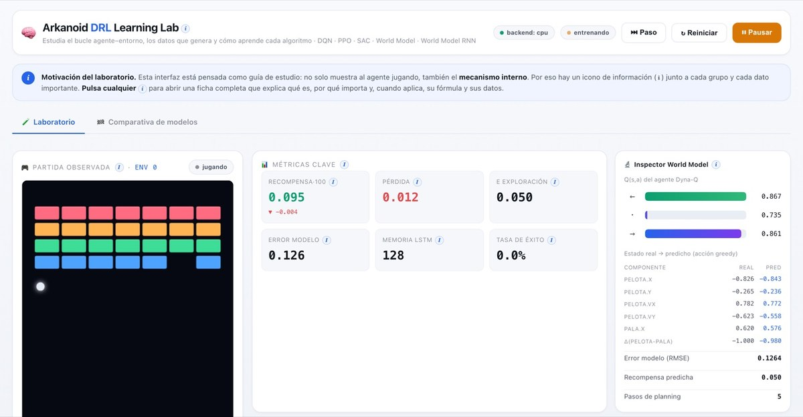
Resultados
En una verificación de 30.000 pasos (CPU) la recompensa subió de ~0 a ~1.33 (veredicto «aprende»), con el error del modelo LSTM bajando de 1.0 a ~0.14 (RMSE sobre estados normalizados): tan fiable como el modelo de un paso del World Model. Y un dato que sorprende: con ese mismo presupuesto superó al World Model base (~0.89). El modelo recurrente imaginó trayectorias más útiles. Memoria plana (~43 tensores, sin fugas) pese a entrenar por secuencias e imaginar con estado oculto.
Interpretación: qué pasó al entrenar
- El LSTM aprende la física por secuencias: su error baja de 1.0 a ~0.14.
- La recompensa sube a ~1.33 en 30k: igualó o superó al World Model base.
- Sin fugas de memoria pese a entrenar por secuencias e imaginar con estado oculto.
- El buffer de secuencias + entrenar sobre tramos de 16 pasos.
- Arrastrar el estado oculto al imaginar: rollouts coherentes.
- Explorar más tiempo (ε lento): le da las secuencias variadas que necesita.
- Probarlo en una tarea con información incompleta, donde la memoria mande aún más.
- Predecir una distribución (como el MDN-RNN original), no un único futuro.
- Alargar el horizonte imaginado aprovechando que la memoria lo sostiene mejor.
Comparación con el modelo del que parte (World Model)
Es el mismo World Model con una sola pieza cambiada: el modelo de dinámica gana memoria.
| Eje | World Model (04) | World Model RNN (05) |
|---|---|---|
| Modelo de dinámica | Perceptrón de un paso. | LSTM (red recurrente con memoria). |
| Cómo se entrena | Transiciones sueltas barajadas. | Secuencias ordenadas (tramos de 16 pasos). |
| Al imaginar | Cada paso parte de cero. | Arrastra el estado oculto: más coherente. |
| Memoria que usa | Replay buffer. | Replay buffer + buffer de secuencias. |
| Exploración (ε) | Decae rápido (12.000). | Decae lento (20.000): quiere secuencias variadas. |
| Resultado aquí (30k pasos) | ~0.89 | ~1.33 |
| Dónde brilla | Estado completo (como el nuestro). | Información incompleta / secuencias. |
Conclusiones
La mayor enseñanza de esta variante no es un número, sino una forma de trabajar. Le dimos memoria (un LSTM) esperando que aquí aportara poco —nuestro juego casi no la necesita— y, sin embargo, igualó o superó al modelo base; y de paso nos descubrió algo que no habríamos adivinado: que necesita explorar más para alimentar esa memoria con jugadas variadas. Es el recordatorio de que en estos sistemas conviene medir antes que suponer: los datos nos corrigieron la intuición.
Los cinco, cara a cara
| Algoritmo | Familia | Política | Qué aprende | Exploración | Señal propia | Reward real* |
|---|---|---|---|---|---|---|
| DQN | Model-free · valor | off-policy | Q(s,a) | ε-greedy | TD-error, ε | 0 → 0.9 (>2 largo) |
| PPO | Model-free · actor-crítico | on-policy | π(a|s) + V(s) | entropía | entropía, ventaja | 0.1 → 0.99 (4.08 en CPU) |
| SAC | Model-free · actor-crítico | off-policy | π + 2·Q | máx. entropía (α) | temperatura α | 0 → 0.99 |
| World Model | Model-based | off-policy | dinámica + Q | ε-greedy | error del modelo | 0 → 0.71 |
| World Model RNN | Model-based · recurrente | off-policy | dinámica (LSTM) + Q | ε-greedy | error del modelo | 0 → 0.44 (CPU) |
* Recompensa media de los últimos 100 episodios, medida en ejecuciones reales (navegador con WebGPU; los datos de PPO y del World Model RNN son de corridas en CPU). El throughput observado fue de ~24.000 exp/s en WebGPU frente a ~5.600 exp/s en CPU.
La misma maquinaria, dimensión a dimensión
Y aquí están los cinco enfrentados en cada decisión de diseño que hemos ido viendo capítulo a capítulo:
| Dimensión | DQN | PPO | SAC | World Model | World Model RNN |
|---|---|---|---|---|---|
| Familia | Valor | Actor-crítico | Actor-crítico | Model-based | Model-based |
| Qué aprende | Valor de cada acción | Estrategia + valor | Estrategia + 2 valores | Física + valor | Física (LSTM) + valor |
| Nº de redes | 2 | 2 | 5 | 2 | 2 |
| Función de pérdida | Huber (TD) | Recortada + V + entropía | 3 pérdidas (min-Q, actor, α) | Regresión + Huber | Regresión (secuencias) + Huber |
| Memoria | Replay buffer | Rollout (usa y tira) | Replay buffer | Replay buffer | Replay + secuencias |
| Modelo de dinámica | — | — | — | MLP (1 paso) | LSTM (secuencia) |
| Exploración | ε-greedy | Entropía fija | Entropía con α auto | ε-greedy | ε-greedy |
| Eficiencia en datos | Alta | Media | Alta | La más alta* | Alta* |
| Estabilidad | Media-alta | La mejor | Alta | Según el modelo | Según el modelo |
| Coste por paso | Bajo | Bajo | Alto | Medio | Medio-alto |
| Su riesgo propio | Sobreestimar Q | Pasos grandes | Cómputo | Model bias | Model bias |
| Brilla cuando… | Quieres un cimiento simple | Quieres cero sustos | Los datos son caros y hay que explorar | Cada dato real cuesta mucho | El presente no basta (memoria) |
* "La más alta" siempre que el modelo aprendido sea fiel; si no, el model bias lo penaliza.
Medir de verdad: ¿quién juega mejor?
El problema: la recompensa de entrenar no es justa
Sería tentador comparar a los cinco mirando su curva de recompensa durante el entrenamiento y coronar al de la curva más alta. Pero esa comparación es injusta, porque mientras entrena, cada algoritmo explora de una manera distinta: DQN mueve al azar una fracción de las veces, SAC se obliga a probar cosas a propósito, PPO decide con algo de aleatoriedad. Esa exploración ensucia la recompensa: un algoritmo puede tener una política excelente y aun así puntuar bajo durante el entrenamiento porque se está forzando a experimentar.
La solución: evaluar la política «en limpio»
Para comparar con justicia, tras entrenar cada modelo se le hace «el examen en limpio»: se le deja jugar sin exploración —eligiendo siempre lo que cree mejor— sobre un puñado de partidas nuevas, y se mide cómo le va. Así se compara la calidad real de cada política, sin el ruido de la exploración.
Qué se mide (y por qué)
| Métrica | Qué dice |
|---|---|
| Recompensa greedy | La calidad real de la política, ya sin el ruido de la exploración. Es la medida principal. |
| Tasa de éxito | Porcentaje de partidas en que limpia todos los ladrillos: ¿resuelve la tarea o solo sobrevive? |
| Ladrillos rotos | Progreso fino, útil cuando el éxito total todavía es raro. |
| Eficiencia de muestra | Cuántos pasos necesita para superar un umbral de recompensa: ¿quién aprende con menos datos? |
| Estabilidad | Cuánto oscila la curva al final (su desviación): ¿sube suave o a tirones? |
| Throughput | Experiencias por segundo: lo barato o caro que es cada paso de ese algoritmo. |
La pestaña «Comparativa»
El laboratorio incorpora esto como una herramienta: una segunda pestaña que, con un botón, entrena los cinco modelos con el mismo presupuesto, los evalúa en modo greedy y presenta un panel de resultados: las curvas de aprendizaje superpuestas, una tabla con las métricas de arriba (marcando la mejor de cada columna) y un veredicto.
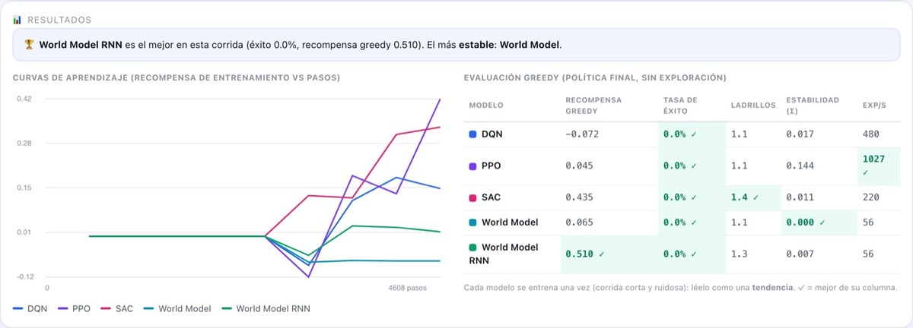
Qué dicen los datos
La búsqueda en rejilla, algoritmo por algoritmo
El laboratorio incorpora una búsqueda en rejilla (grid search): prueba combinaciones de los dos o tres ajustes más influyentes de cada algoritmo, entrena un agente aislado por combinación y las ordena por recompensa, resaltando la mejor. Así se ve el pop-up en vivo (ejemplo con DQN) y, debajo, el resultado real de la rejilla 3×3 de los cinco como mapa de calor (verde = más recompensa; la mejor celda, marcada con ✓):
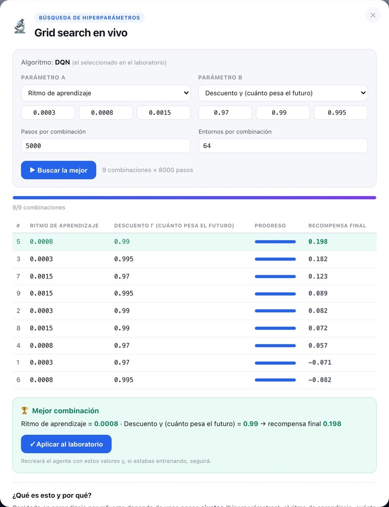
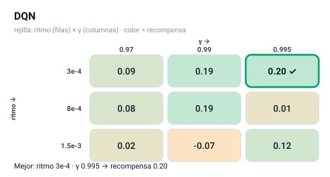
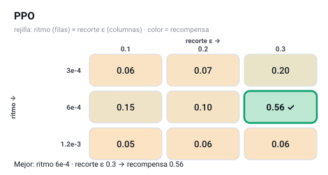
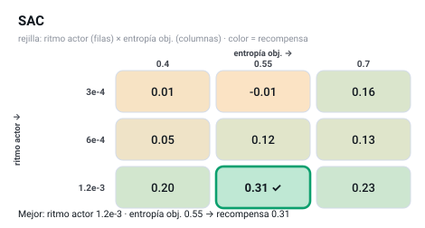
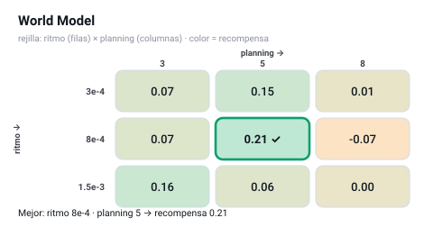
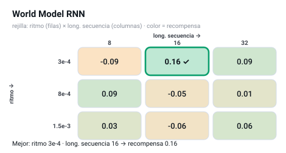
Las cinco rejillas se corren con presupuesto corto (5.000 pasos por celda) para ser ágiles, así que son ruidosas: la mejor celda puede no coincidir con la de un análisis más largo (DQN, por ejemplo, prefiere 8e-4/0.99 con más pasos). Ese ruido es precisamente el motivo de no fiarse de una rejilla rápida y afinar con más cuidado, como sigue.
El afinado que de verdad movió la aguja
Mirar solo la rejilla rápida no basta. Analizando las curvas de convergencia de corridas más largas aparecieron dos ajustes que dejaban mucho rendimiento sin aprovechar, y una sorpresa. Cada cambio se validó con un experimento de una sola variable:
| Modelo | Ajuste | Efecto medido |
|---|---|---|
| PPO | coef. de entropía 0.01 → 0.003 | final 1.88 → 4.59 (+144%): su política estaba casi uniforme (no se comprometía); ahora sí. |
| DQN | ε decae en 25.000 → 12.000 pasos | 1.13 → 1.55 (+37%); explotaba demasiado tarde. Converge ~12k pasos antes. |
| World Model | ε decae en 20.000 → 12.000 | 0.89 → 1.05 (+19%): misma lógica que DQN (también usa Q-net + ε). |
| World Model RNN | ε se mantiene lento (20.000) | al revés: ε rápido lo empeora (1.33→1.05). Su LSTM necesita secuencias variadas → explorar más. |
| SAC | entropía objetivo (barrida) — sin cambios | insensible entre 0.4 y 0.7, así que el default 0.55 vale. Es el más estable; no hacía falta tocarlo. |
Convergencia y estabilidad, cara a cara
Con los valores afinados, así se comportan en corridas reales (recompensa media de los últimos 100 episodios):
| Modelo | Rapidez en converger | Estabilidad | Coste por paso | Nota |
|---|---|---|---|---|
| PPO | La más rápida (≈14k pasos a reward 1) | Media (algo ruidosa) | Bajo | Tras afinar, la mayor recompensa con diferencia. |
| DQN | Media | Media | Bajo | El cimiento simple y fiable. |
| SAC | Media | La mejor | Alto (5 redes) | Sube suave, sin sustos. |
| World Model | Media | Alta | Medio | La idea más eficiente en datos; techo por el model bias. |
| World Model RNN | Media | Media | El más alto (LSTM) | Competitivo; pide explorar más. |
El veredicto (corregido en la Edición 2)
Por qué cada modelo rinde así
La comparativa (capítulo «El resultado») dice quién gana. Estos cinco experimentos controlados dicen por qué. La regla: cambiar una sola cosa cada vez y medir su efecto, sin tocar nada más del protocolo congelado. Cada uno deja un artefacto en results/analysis/.
C1 · ¿De qué falla PPO? (el techo de control)
PPO es el mejor, pero aún falla ~1 de cada 10 niveles. ¿Es resoluble (le falta aprender algo) o es un techo? Lo diagnosticamos re-evaluando sus checkpoints e instrumentando cada episodio fallido por familia, dificultad y causa de fin. El veredicto es claro:
C2 · ¿Por qué DQN < PPO? (no es la representación)
La hipótesis natural: «a DQN le falta una representación mejor». La probamos cambiando solo el encoder de DQN (todo lo demás igual) entre conv, una lista plana (MLP) y una variante por ramas:
| Encoder de DQN | 700k | 1,5M | 3M | Lectura |
|---|---|---|---|---|
| conv (receta base) | 67% | 77% | 85% | El mejor a bajo y alto presupuesto. |
| branches (ramas por fila) | 55% | 78% | 76% | Buen punto medio; iguala a 1,5M, topa a 3M. |
| flat (lista plana, MLP) | 32% | 57% | 77% | El peor; alcanza a branches a 3M. |
| flat con escala 0.25 | 1% | 1% | 1% | Colapsa al 100%: el MLP es muy sensible a la escala de entrada. |
C3 · La ablación: qué ingrediente manda
La tabla completa está en el capítulo «El resultado» (T2). Lo que significa: el ranking de impacto al quitar cada ingrediente de la receta de DQN (base 77%) es escala 1.0 (−76,5; sin ella, colapso total) ≫ timeout (−23,5) > conv (−20,4) > ε-decay (−2,6) ≈ currículo (−1,9), y shaping +8,0 (quitarlo mejora). Dos lecciones honestas:
C4 · SAC honesto: el actor «de libro» SÍ funciona
El «SAC» de la comparativa no es SAC a secas: es SAC-critic-hybrid (juega y evalúa con la política del crítico, porque se creía que el actor colapsaba). Separamos el SAC-pure (usar el actor) y los medimos a la vez:
| Presupuesto | SAC-critic-hybrid | SAC-pure (actor) |
|---|---|---|
| 700k | 4% (80% colapsos) | 25% (60% colapsos) |
| 1,5M | 61% (20% colapsos) | 87% (0% colapsos) |
| 3M | 88% | 91% |
C5 · World Models: el hallazgo negativo, caracterizado
Honestidad de nombre: estos World Models no son simuladores del juego. Son Dyna-Q con un modelo dinámico cinemático (predicen la bola; los ladrillos quedan fijos en la imaginación). Topan ~55% (MLP) / ~40% (RNN), muy por debajo del model-free. La hipótesis era «el LSTM predice peor la dinámica y por eso lastra». La medimos y la refutamos: el error de predicción 1-paso del LSTM ≈ el del MLP (×1,02).
Cómo se midió (y por qué te puedes fiar)
El protocolo congelado
Antes de medir, se congelaron (y se sellaron con un hash) el generador de niveles, los tres conjuntos de test, las semillas, los presupuestos, la receta base y la forma de evaluar. Una vez congelado, no se cambia nada entre comparaciones. Hash: a1ab7ce18d7bad6b.
| Decisión | Valor congelado |
|---|---|
| Semillas | 5 (0–4); se reporta la distribución, no el mejor run. |
| Presupuestos | 700k / 1,5M / 3M pasos de entorno. |
| Evaluación | greedy (a lo seguro), sobre listas fijas de niveles no vistos. |
| Test sets | TEST-ID 500 · OOD-patrón 250 · OOD-dificultad 199 (todos limpiables, verificado por oráculo). |
| Umbral de colapso | una semilla «colapsa» si baja del 10% de éxito. |
| Ledger | cada run añade una fila a results/ledger.csv (160 runs). Ninguna cifra existe fuera del ledger. |
Infraestructura: exprimir la máquina sin tocar la ciencia
El entrenamiento corre en PyTorch sobre la GPU Metal (MPS) de un Apple M3 Ultra. El entorno del juego va en numpy (CPU) y la red en GPU, así que una sola partida infrautiliza la máquina. La solución honesta: correr muchas runs independientes a la vez (cada una con su configuración congelada, bit a bit idéntica a correrla sola). El punto óptimo, medido, son 24 runs concurrentes (~5× de throughput; la GPU es el cuello). Resultado: las 75 runs de la comparativa en 64 minutos en vez de ~3 horas — sin alterar ningún número.
Cómo reproducirlo
.venv/bin/python gpu/tanda_par.py # comparativa C6 (75 runs, K=24)
.venv/bin/python gpu/report_c6.py # tabla final §8
.venv/bin/python gpu/c1_ppo_failures.py · c2_representation · c3_ablation · c4_sac · c5_world_models
🎮 Jugar: los modelos entrenados, en acción
Una cosa es medir que un modelo aprende —las curvas, las tablas— y otra es verlo jugar. La tercera pestaña del laboratorio, «Jugar», cierra ese hueco: pone a los cinco agentes ya entrenados a jugar de verdad, en modo greedy (siempre su mejor jugada, sin exploración), sobre niveles del conjunto de test —patrones de ladrillos que no vieron nunca en el entrenamiento—. Es la prueba a ojo de lo que las métricas resumen en un número: si apunta, si rompe ladrillos, si completa el nivel.
Modelos ya entrenados, listos para jugar
No hace falta entrenar nada para usar esta pestaña: los modelos se proporcionan ya entrenados y persistidos. Se generan una sola vez, offline y a fondo, con un comando (npm run zoo) que entrena cada algoritmo con la misma arquitectura convolucional 8×10 y el mismo protocolo (niveles variados, currículo, evaluación greedy) que la comparativa de este informe, y guarda su red de decisión como ficheros versionados en public/modelos/. La app los carga al instante al abrir la pestaña; cada modelo trae su ficha —familia, pasos de entrenamiento y éxito medido en test—.
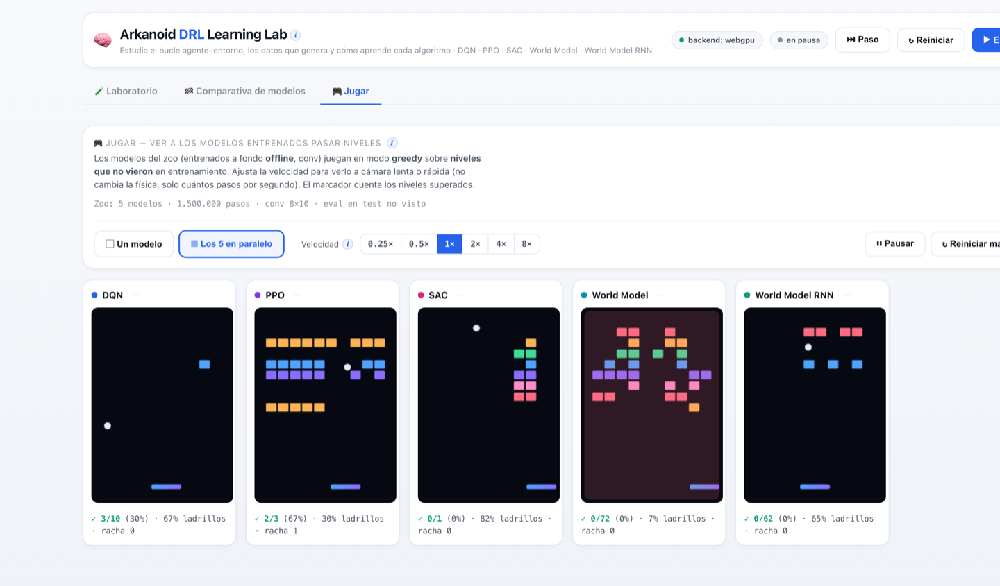
A la velocidad que quieras
Un control de velocidad permite ver el juego a cámara lenta (0,25×: un paso cada varios fotogramas, para seguir una jugada con detalle) o en avance rápido (hasta 8×). Como en el resto del laboratorio, la velocidad nunca toca la física: solo cambia cuántos pasos por segundo se muestran. La política es siempre la misma.
Re-entrénalos tú y compara
Y si quieres ir más allá de los modelos «de fábrica», cada uno tiene un botón «Regenerar» que lo entrena de nuevo ahí mismo, en tu navegador, y guarda tu copia en el almacenamiento local —sin tocar los oficiales—. Así puedes ver el resultado de tu propio re-entrenamiento jugar, contrastarlo con el de referencia o partir de cero. Los modelos se ven de uno en uno (a pantalla grande, con su marcador detallado) o los cinco a la vez, cara a cara sobre niveles equivalentes.
Lo que de verdad nos llevamos
- El cuello era la tarea, no el método.
- Reloj, recompensa, observación, currículo y evaluación importan tanto o más que PPO vs DQN.
- Bien planteado, PPO funcionó a la primera.
- Recompensa ≠ éxito. El ciego acumulaba premio y pasaba 0 niveles.
- El shaping Φ optimizaba la pista, no la meta.
- Medir el logro real (éxito en test) cambia las conclusiones.
- Multi-semilla: salvó 3 conclusiones falsas (SAC «roto», LSTM «peor», currículo «−27»).
- Protocolo congelado: sin tocar nada entre comparaciones.
- Cada cifra trazable a un artefacto.
Tres conclusiones que solo se ven midiendo
Glosario
Para seguir aprendiendo
La progresión de este laboratorio —valor (DQN) → política (PPO) → política + entropía (SAC) → modelo del mundo (World Model)— es la misma escalera que recorre el campo del aprendizaje por refuerzo.
Lecturas recomendadas
Experimentos que puedes hacer con este laboratorio
Baja γ a 0.8: ¿se vuelve cortoplacista? Acelera el decaimiento de ε: ¿explora menos y se estanca?
Prueba capas más grandes o más pequeñas en constantes.js y mira el efecto en la curva.
Sube el castigo por perder o el premio por romper: observa cómo cambia el comportamiento del agente.
Entrena los cinco el mismo tiempo y compara recompensa, estabilidad y velocidad.
Descárgalo y entrénalo tú
1 · Clona e instala
git clone https://github.com/rcanalescoder/DRLArkanoid.git && cd DRLArkanoid
npm install # vite + @tensorflow/tfjs + backend WebGPU2 · Arranca el laboratorio
npm run dev # abre http://localhost:5173 y pulsa ▶ Entrenar ./arrancar.sh # alternativa: arranca y, si ya estaba, rearranca
3 · Verifica o entrena por consola (sin navegador)
npm run verificar # entrena los 5 algoritmos (CPU) y reporta si aprenden node scripts/entrenar.mjs dqn --pasos 40000 --envs 128 # entrena uno y muestra trazas
Cómo está organizado el código
- Las redes
- agentes/*.js + agentes/redes/constructorRedes.js
- El entrenamiento
- entrenamiento/orquestador.js (el ciclo) y el método entrenar() de cada agente (la regla de actualización).
- El juego
- entorno/entornoArkanoid.js (física) y gestorEntornos.js (los dos pools).
- La memoria
- datos/replayBuffer.js (off-policy) y datos/rolloutBuffer.js (on-policy).
Algoritmo a algoritmo
La fábrica de redes (común a todos)
const modelo = tf.sequential({ name: nombre });
capasOcultas.forEach((unidades, i) => {
modelo.add(tf.layers.dense({
units: unidades, activation: "relu",
inputShape: i === 0 ? [dimEntrada] : undefined,
kernelInitializer: "heNormal", // buena inicialización para ReLU
}));
});
modelo.add(tf.layers.dense({ units: dimSalida, activation: activacionSalida }));PPO · el objetivo recortado
const ratio = logpA.sub(logpViejoMb).exp(); // ρ = π_nueva / π_vieja const surr1 = ratio.mul(advMb); const surr2 = ratio.clipByValue(1 - eps, 1 + eps).mul(advMb); // recorte const lossPol = surr1.minimum(surr2).mean().mul(-1); // objetivo recortado const entropia = probs.mul(logp).sum(1).mean().mul(-1); const lossVal = valor.sub(retMb).square().mean(); // crítica: MSE contra el retorno return lossPol.add(lossVal.mul(coefValor)).sub(entropia.mul(coefEntropia));
SAC · la temperatura α que se aprende sola
// α se ajusta para acercar la entropía de la política a la entropía objetivo.
const lossAlphaT = pasoGradiente(this.optAlpha, () => {
const term = this.logAlpha.mul(-1).mul(logpC.add(this.targetEntropy));
return probsC.mul(term).sum(1).mean();
}, [this.logAlpha]);World Model · entrenar el modelo de dinámica
const lossT = pasoGradiente(this.optModelo, () => {
const out = this.modelo.predict(entrada); // entrada = [s ⊕ one-hot(a)]
const dsPred = out.slice([0, 0], [B, this.dimEstado]); // Δs predicho
const rPred = out.slice([0, this.dimEstado], [B, 1]); // r predicha
const donePred = out.slice([0, this.dimEstado + 1], [B, 1]);
return tf.losses.meanSquaredError(dsObjetivo, dsPred) // aprender la física…
.add(tf.losses.meanSquaredError(rT, rPred)) // …la recompensa…
.add(tf.losses.sigmoidCrossEntropy(doneT, donePred).mul(0.5)); // …y el fin de episodio
}, this._varsModelo);Licencia MIT
- Autor
- Roberto Canales Mora · con Claude Chat / Code
- Web
- www.robertocanales.com
- Licencia
- MIT
- Repositorio
- github.com/rcanalescoder/DRLArkanoid
- Entorno
- Vite + TensorFlow.js (WebGPU / WebGL / CPU). Probado en macOS (Apple Silicon M4).
Licencia MIT Copyright (c) 2026 Roberto Canales Mora Por la presente se concede permiso, sin cargo, a cualquier persona que obtenga una copia de este software y de los archivos de documentación asociados (el "Software"), para utilizar el Software sin restricción, incluyendo sin limitación los derechos a usar, copiar, modificar, fusionar, publicar, distribuir, sublicenciar y/o vender copias del Software, y a permitir a las personas a las que se les proporcione el Software a hacer lo mismo, sujeto a las siguientes condiciones: El aviso de copyright anterior y este aviso de permiso se incluirán en todas las copias o partes sustanciales del Software. EL SOFTWARE SE PROPORCIONA "TAL CUAL", SIN GARANTÍA DE NINGÚN TIPO, EXPRESA O IMPLÍCITA, INCLUYENDO PERO NO LIMITADO A GARANTÍAS DE COMERCIALIZACIÓN, IDONEIDAD PARA UN PROPÓSITO PARTICULAR Y NO INFRACCIÓN. EN NINGÚN CASO LOS AUTORES O PROPIETARIOS DE LOS DERECHOS DE AUTOR SERÁN RESPONSABLES DE NINGUNA RECLAMACIÓN, DAÑOS U OTRAS RESPONSABILIDADES, YA SEA EN UNA ACCIÓN DE CONTRATO, AGRAVIO O DE OTRO MODO, QUE SURJA DE, FUERA DE O EN CONEXIÓN CON EL SOFTWARE O EL USO U OTROS NEGOCIOS EN EL SOFTWARE.